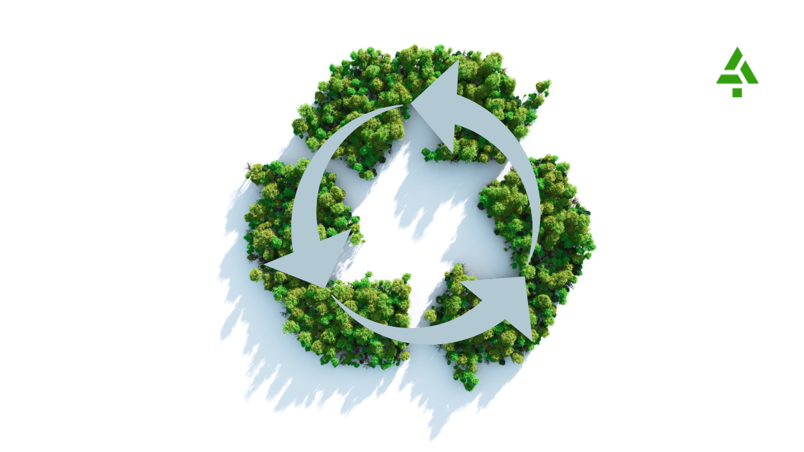
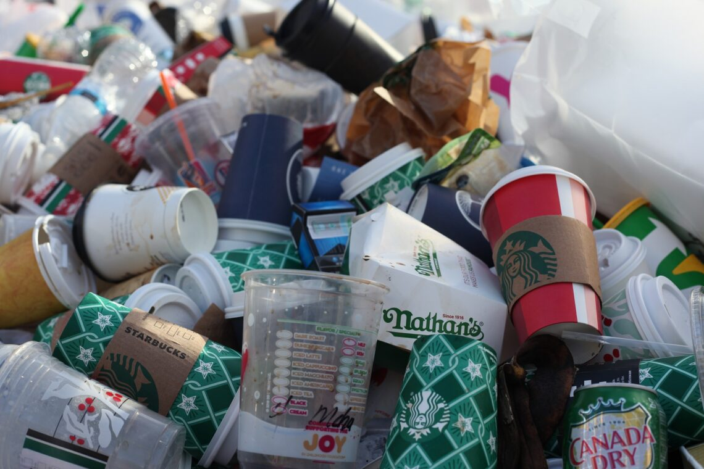

Hacia un modelo sostenible
La economía circular es el nuevo sistema económico y social que busca producir bienes y servicios aprovechando los recursos y reduciendo el consumo de materias primas, agua y fuentes de energía.
SOBRE NUESTRA METODOLOGÍA

Nuestra metodología de formación más reconocida, una modalidad en la que priorizamos la calidad tanto del contenido como del equipo docente, un claustro profesional, cercano y en constante relación con las empresas.
¿Por qué es importante la economía circular?
- Sostenibilidad ambiental:
- La economía circular busca minimizar el impacto ambiental de la actividad humana, reduciendo la generación de residuos, la contaminación y el consumo de recursos naturales.
- Escasez de recursos:
- Muchas materias primas son finitas y su demanda aumenta con el crecimiento poblacional. La economía circular promueve la reutilización, reciclaje y reparación de productos para extender su vida útil y reducir la necesidad de extraer nuevos recursos.
- Dependencia de recursos:
- La economía circular puede ayudar a reducir la dependencia de países extranjeros para la obtención de materias primas, fomentando el uso de recursos locales y la producción nacional.
- Beneficios económicos:
- La extracción,∫ procesamiento y transporte de materias primas generan importantes emisiones de gases de efecto invernadero. La economía circular, al reducir el consumo de estos recursos, contribuye a mitigar el cambio climático.
- Beneficios sociales:
- La economía circular puede generar nuevas oportunidades de negocio, crear empleos y aumentar la competitividad de las empresas. Además, puede reducir los costos operativos al disminuir la necesidad de comprar materias primas nuevas.
El coste ambiental de un sistema de "usar y tirar"

Lejos del actual sistema lineal de ‘usar y tirar’, apuesta por otro mucho más respetuoso con el medio ambiente que permite extender la vida útil de los productos y darles una segunda vida mediante la prevención, la reutilización, reparación y reciclaje, convirtiendo los residuos en recursos.